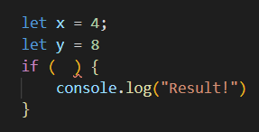
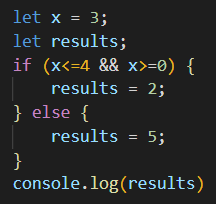

Intro to Java Script - Opdracht 3
Conditions
Opdracht 3.1
Conditions werken erg vaak met operators. Om goed met conditions te kunnen
werken, moet je operators echt goed begrijpen. Daarom onderzoeken we ze
hier nogmaals:
Wat is het verschil tussen == en ===?
Bij de operator == wordt er enkel gecheckt of de de variabele gelijk is.
Dit kan betekenen dat er een string met een cijferreeks wordt
vergeleken. hebben deze bijde dezelfde waarde (bijvoorbeeld 10) dan is
dit statement true.
Bij de operator === daarintegen wordt er naast de waarde ook het type
vergeleken. Hierbij kan de waarde wel gelijk zijn (zoals in het vorrige
voorbeeld) naar zijn de types niet gelijk is dit statement nogsteeds
false. Zowel waarde als type moeten gelijk zijn voor een true statement.
Wat is het verschil tussen > en >=?
De eerste betekend groter dan. De tweede groter dan of gelijk aan.
En tussen
< en <=?
Kleiner dan. Kleiner dan of gelijk aan
Soms controleert een conditie meerdere dingen tegelijkertijd. Dit doet JS
met de hulp van Logical Operators:
&& EN
|| OF
! NIET
Soms worden deze in combinatie gebruikt. Gegeven volgende code:

Schrijf de If conditie zo, dat je alleen Results ziet als x==4 en
y==8
zie console en code
Schrijf het nu zo dat je alleen Results ziet als x==4 OF y==8
zie console en code
Zet nu de console.log(“Results”) in een Else { } na de If. Kan je de
conditie omdraaien zodat je alsnog Results te zien krijgt?
zie console en code
Kan je het vorige antwoord ook geven zonder || te gebruiken?
zie console en code
Schrijf voor de volgende opdrachten 1 If/Else die 1 variabele waarde
controleert, en zorg voor het volgende:
Log het in je console als de waarde groter dan 5 EN kleiner dan 10 is.
Zo niet, log dan in je console als de waarde 11 of groter EN 20 of
kleiner is.
Zo niet, log dan in je console als de waarde 21 of 23 is.
Zo niet, log dan in je console als de waarde kleiner dan 35 OF tussen de
40 en 45 is.
zie console en code
Test of je bij alle uitkomsten kan komen. Verandert er iets als je alle
If/Else omzet in aparte If blokken?
Het lijkt in eerste instantie te werken. totdat er een waarde boven de
44 wordt ingevoerd. Er is nu nml geen else meer en javascript pakt
hierdoor de laate if optie: een incorrecte uitslag in dit geval.
Opdracht 3.2
We oefenen nog wat extra met grotere If/Else blokken, Switch/case en
Ternary Operators.
- Schrijf een If/Else blok die een eigen variabele controleert:
- Gelijk aan 3?
- Groter dan 4?
- Groter dan 11?
- Kleiner dan 3?
zie console en code
-
Test je variabele met 2, 3, 4, 5 en 20. Gebeurt er iets
onverwachts?
Er gebeurt niets onverwachts. De echter de het gebruik van if/else op
deze manier lijkt niet correct. Bij 4 krijg ik een error: 4 is niet
gedefinieerd in deze code! 20 geeft ook een "vasle" uitslag: code kan
stoppen bij groter dan 4 (wat 20 is!) en komt dus nooit verder in de
else/if string. Dit zou wél werken als je de code omdraait. Dit zodat
eerst de grote getallen worden gecheckt. (is x<30? nee? is x>11? nee? x>4? etc)
- Schrijf een If/Else die een variabele op numerieke waarde controleert, en
de passende maand in je console logt.
- Januari
- Februari
- Maart
- April
- Mei
- Juni
- Juli
- Augustus
- September
- October
- November
- December
- Andere getallen loggen (“Geen geldige maand!”).
zie console en code
Bouw nu vorrige opdrach met een Switch/case.
Gegeven de volgende code:

Herschrijf dit als een Ternary Operator.